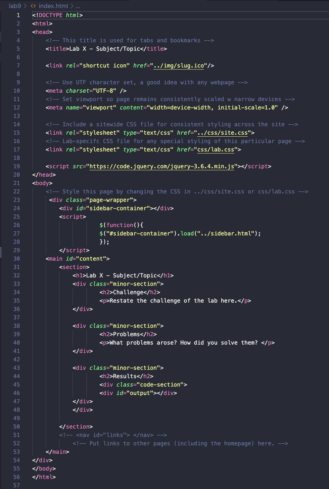

Lab 9 - Libraries & jQuery
Challenge
This lab challenged me to work with the jquery library. I also had to utilized my knowledge of classes and ids as well as apply that knowledge in tandem with selectors to create the desired results. Additionally, I worked with functions in this lab.
Problems
I had some minor syntax mistakes such as forgetting the final s in .special-sections" which caused there to be no output for a while. Additionally, in the bonus task I forgot to change one of the "#special-sections" to ".special-sections" making the code select the id instead of the desired class.
Results

Am I Special?